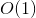
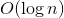
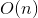
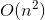

28.2 性能
相比JavaScript刚问世时，目前每个网页中JavaScript代码的数量已有极大的增长。代码量的增长也带来了运行时执行JavaScript的性能问题。JavaScript一开始就是一门解释型语言，因此执行速度比编译型语言要慢一些。Chrome是第一个引入优化引擎将JavaScript编译为原生代码的浏览器。随后，其他主流浏览器也紧随其后，实现了JavaScript编译。
即使到了编译JavaScript时代，仍可能写出运行慢的代码。不过，如果遵循一些基本模式，就能保证写出执行速度很快的代码。
28.2.1 作用域意识
第4章讨论过JavaScript作用域的概念，以及作用域链的工作原理。随着作用域链中作用域数量的增加，访问当前作用域外部变量所需的时间也会增加。访问全局变量始终比访问局部变量慢，因为必须遍历作用域链。任何可以缩短遍历作用域链时间的举措都能提升代码性能。
-
避免全局查找
改进代码性能非常重要的一件事，可能就是要提防全局查询。全局变量和函数相比于局部值始终是最费时间的，因为需要经历作用域链查找。来看下面的函数：
function updateui() { let imgs = document.getelementsbytagname("img"); for (let i = 0, len = imgs.length; i < len; i++) { imgs[i].title = '${document.title} image ${i}'; } let msg = document.getelementbyid("msg"); msg.innerhtml = "update complete."; }这个函数看起来好像没什么问题，但其中三个地方引用了全局
document对象。如果页面的图片非常多，那么for循环中就需要引用document几十甚至上百次，每次都要遍历一次作用域链。通过在局部作用域中保存document对象的引用，能够明显提升这个函数的性能，因为只需要作用域链查找。通过创建一个指向document对象的局部变量，可以通过将全局查找的数量限制为一个来提高这个函数的性能：function updateui() { let doc = document; let imgs = doc.getelementsbytagname("img"); for (let i = 0, len = imgs.length; i < len; i++) { imgs[i].title = '${doc.title} image ${i}'; } let msg = doc.getelementbyid("msg"); msg.innerhtml = "update complete."; }这里先把
document对象保存在局部变量doc中。然后用doc替代了代码中所有的document。这样调用这个函数只会查找一次作用域链，相对上一个版本，肯定会快很多。因此，一个经验规则就是，只要函数中有引用超过两次的全局对象，就应该把这个对象保存为一个局部变量。
-
不使用
with语句在性能很重要的代码中，应避免使用
with语句。与函数类似，with语句会创建自己的作用域，因此也会加长其中代码的作用域链。在with语句中执行的代码一定比在它外部执行的代码慢，因为作用域链查找时多一步。实际编码时很少有需要使用
with语句的情况，因为它的主要用途是节省一点代码。大多数情况下，使用局部变量可以实现同样的效果，无须增加新作用域。下面看一个例子：function updatebody() { with(document.body) { console.log(tagname); innerhtml = "hello world!"; } }这段代码中的
with语句让使用document.body更简单了。使用局部变量也可以实现同样的效果，如下：function updatebody() { let body = document.body; console.log(body.tagname); body.innerhtml = "hello world!"; }虽然这段代码多了几个字符，但比使用
with语句还更容易理解了，因为tagName和innerHTML属于谁很明确。这段代码还通过把document.body保存在局部变量中来省去全局查找。
28.2.2 选择正确的方法
与其他语言一样，影响性能的因素通常涉及算法或解决问题的方法。经验丰富的开发者知道用什么方法性能更佳。通常很多能在其他编程语言中提升性能的技术和方法同样也适用于JavaScript。
-
避免不必要的属性查找
在计算机科学中，算法复杂度使用大表示法来表示。最简单同时也最快的算法可以表示为常量值或。然后，稍微复杂一些的算法同时执行时间也更长一些。下表列出了JavaScript中常见算法的类型。
表示法 名称 说明 常量 无论多少值，执行时间都不变。表示简单值和保存在变量中的值  对数 执行时间随着值的增加而增加，但算法完成不需要读取每个值。例子：二分查找  线性 执行时间与值的数量直接相关。例子：迭代数组的所有元素  二次方 执行时间随着值的增加而增加，而且每个值至少要读取  次。例子：插入排序
次。例子：插入排序常量值或，指字面量和保存在变量中的值，表示读取常量值所需的时间不会因值的多少而变化。读取常量值是效率极高的操作，因此非常快。来看下面的例子：
let value = 5; let sum = 10 + value; console.log(sum);以上代码查询了4次常量值：数值5、变量
value、数值10和变量sum。整体代码的复杂度可以认为是。在JavaScript中访问数组元素也是操作，与简单的变量查找一样。因此，下面的代码与前面的例子效率一样：
let values = [5, 10]; let sum = values[0] + values[1]; console.log(sum);使用变量和数组相比访问对象属性效率更高，访问对象属性的算法复杂度是。访问对象的每个属性都比访问变量或数组花费的时间长，因为查找属性名要搜索原型链。简单来说，查找的属性越多，执行时间就越长。来看下面的例子：
let values = { first: 5, second: 10 }; let sum = values.first + values.second; console.log(sum);这个例子使用两次属性查找来计算
sum的值。一两次属性查找可能不会有明显的性能问题，但几百上千次则绝对会拖慢执行速度。特别要注意避免通过多次查找获取一个值。例如，看下面的例子：
let query = window.location.href.substring(window.location.href.indexof("?"));这里有6次属性查找：3次是为查找
window.location.href.substring()，3次是为查找window.location.href.indexOf()。通过数代码中出现的点号数量，就可以知道有几次属性查找。以上代码效率特别低，这是因为使用了两次window.location.href，即同样的查找执行了两遍。只要使用某个
object属性超过一次，就应该将其保存在局部变量中。第一次仍然要用的复杂度去访问这个属性，但后续每次访问就都是，这样就是质的提升了。例如，前面的代码可以重写为如下：let url = window.location.href; let query = url.substring(url.indexof("?"));这个版本的代码只有4次属性查找，比之前节省了约33%。在大型脚本中如果能这样优化，可能就会明显改进性能。
通常，只要能够降低算法复杂度，就应该尽量通过在局部变量中保存值来替代属性查找。另外，如果实现某个需求既可以使用数组的数值索引，又可以使用命名属性（比如
NodeList对象），那就都应该使用数值索引。
-
优化循环
循环是编程中常用的语法构造，因此在JavaScript中也十分常见。优化这些循环是性能优化的重要内容，因为循环会重复多次运行相同的代码，所以运行时间会自动增加。其他语言有很多关于优化循环的研究，这些技术同样适用于JavaScript。优化循环的基本步骤如下。
(1) 简化终止条件。因为每次循环都会计算终止条件，所以它应该尽可能地快。这意味着要避免属性查找或其他操作。
(2) 简化循环体。循环体是最花时间的部分，因此要尽可能优化。要确保其中不包含可以轻松转移到循环外部的密集计算。
(3) 使用后测试循环。最常见的循环就是
for和while循环，这两种循环都属于先测试循环。do-while就是后测试循环，避免了对终止条件初始评估 ，因此应该会更快。注意 在旧版浏览器中，从循环迭代器的最大值开始递减至0的效率更高。之所以这样更快，是因为JavaScript引擎用于检查循环分支条件的指令数更少。在现代浏览器中，正序还是倒序不会有可感知的性能差异。因此可以选择最适合代码逻辑的迭代方式。
以上优化的效果可以通过下面的例子展示出来。这是一个简单的
for循环：for (let i = 0; i < values.length; i++) { process(values[i]); }这个循环会将变量
i从0递增至数组values的长度。假设处理这些值的顺序不重要，那么可以将循环变量改为递减的形式，如下所示：for (let i = values.length - 1; i >= 0; i--) { process(values[i]); }这一次，变量
i每次循环都会递减。在这个过程中，终止条件的计算复杂度也从查找values.length的变成了访问0的。循环体只有一条语句，已不能再优化了。不过，整个循环可修改为后测试循环：let i = values.length-1; if (i > -1) { do { process(values[i]); }while(--i >= 0); }这里主要的优化是将终止条件和递减操作符合并成了一条语句。然后，如果再想优化就只能去优化
process()的代码，因为循环已没有可以优化的点了。使用后测试循环时要注意，一定是至少有一个值需要处理一次。如果这里的数组是空的，那么会浪费一次循环，而先测试循环就可以避免这种情况。
-
展开循环
如果循环的次数是有限的，那么通常抛弃循环而直接多次调用函数会更快。仍以前面的循环为例，如果数组长度始终一样，则可能对每个元素都调用一次
process()效率更高：// 抛弃循环 process(values[0]); process(values[1]); process(values[2]);这个例子假设
values数组始终只有3个值，然后分别针对每个元素调用一次process()。像这样展开循环可以节省创建循环、计算终止条件的消耗，从而让代码运行更快。如果不能提前预知循环的次数，那么或许可以使用一种叫作达夫设备（Duff's Device）的技术。该技术是以其发明者Tom Duff命名的，他最早建议在C语言中使用该技术。在JavaScript实现达夫设备的人是Jeff Greenberg。达夫设备的基本思路是以8的倍数作为迭代次数从而将循环展开为一系列语句。来看下面的例子：
// 来源：jeff greenberg在javascript中实现的达夫设备 // 假设values.length > 0 let iterations = math.ceil(values.length / 8); let startat = values.length % 8; let i = 0; do { switch(startat) { case 0: process(values[i++]); case 7: process(values[i++]); case 6: process(values[i++]); case 5: process(values[i++]); case 4: process(values[i++]); case 3: process(values[i++]); case 2: process(values[i++]); case 1: process(values[i++]); } startat = 0; } while (--iterations > 0);这个达夫设备的实现首先通过用
values数组的长度除以8计算需要多少次循环。Math.ceil()用于保证这个值是整数。startAt变量保存着仅按照除以8来循环不会处理的元素个数。第一次循环执行时，会检查startAt变量，以确定要调用process()多少次。例如，假设数组有10个元素，则startAt变量等于2，因此第一次循环只会调用process()两次。第一次循环末尾，startAt被重置为0。于是后续每次循环都会调用8次process()。这样展开之后，能够加快大数据集的处理速度。Andrew B. King在Speed Up Your Site一书中提出了更快的达夫设备实现，他将
do-while循环分成了两个单独的循环，如下所示：// 来源：speed up your site（new riders，2003） let iterations = math.floor(values.length / 8); let leftover = values.length % 8; let i = 0; if (leftover > 0) { do { process(values[i++]); } while (--leftover > 0); } do { process(values[i++]); process(values[i++]); process(values[i++]); process(values[i++]); process(values[i++]); process(values[i++]); process(values[i++]); process(values[i++]); } while (--iterations > 0);在这个实现中，变量
leftover保存着只按照除以8来循环不会处理，因而会在第一个循环中处理的次数。处理完这些额外的值之后进入主循环，每次循环调用8次process()。这个实现比原始的实现快约40%。展开循环对于大型数据集可以节省很多时间，但对于小型数据集来说，则可能不值得。因为实现同样的任务需要多写很多代码，所以如果处理的数据量不大，那么显然没有必要。
-
避免重复解释
重复解释的问题存在于JavaScript代码尝试解释JavaScript代码的情形。在使用
eval()函数或Function构造函数，或者给setTimeout()传入字符串参数时会出现这种情况。下面是几个例子：// 对代码求值：不要 eval("console.log('hello world!')"); // 创建新函数：不要 let sayhi = new function("console.log('hello world!')"); // 设置超时函数：不要 settimeout("console.log('hello world!')", 500);在上面所列的每种情况下，都需要重复解释包含JavaScript代码的字符串。这些字符串在初始解析阶段不会被解释，因为代码包含在字符串里。这意味着在JavaScript运行时，必须启动新解析器实例来解析这些字符串中的代码。实例化新解析器比较费时间，因此这样会比直接包含原生代码慢。
这些情况都有对应的解决方案。很少有情况绝对需要使用
eval()，因此应该尽可能不使用它。此时，只要把代码直接写出来就好了。对于Function构造函数，重写为常规函数也很容易。而调用setTimeout()时则可以直接把函数作为第一个参数。比如：// 直接写出来 console.log('hello world!'); // 创建新函数：直接写出来 let sayhi = function() { console.log('hello world!'); }; // 设置超时函数：直接写出来 settimeout(function() { console.log('hello world!'); }, 500);为了提升代码性能，应该尽量避免使用要当作JavaScript代码解释的字符串。
-
其他性能优化注意事项
在评估代码性能时还有一些地方需要注意。下面列出的虽然不是主要问题，但在使用比较频繁的时候也可能有所不同。
-
原生方法很快。应该尽可能使用原生方法，而不是使用JavaScript写的方法。原生方法是使用C或C++等编译型语言写的，因此比JavaScript写的方法要快得多。JavaScript中经常被忽视的是
Math对象上那些执行复杂数学运算的方法。这些方法总是比执行相同任务的JavaScript函数快得多，比如求正弦、余弦等。 -
switch语句很快。如果代码中有复杂的if-else语句，将其转换成switch语句可以变得更快。然后，通过重新组织分支，把最可能的放前面，不太可能的放后面，可以进一步提升性能。 - 位操作很快。在执行数学运算操作时，位操作一定比任何布尔值或数值计算更快。选择性地将某些数学操作替换成位操作，可以极大提升复杂计算的效率。像求模、逻辑AND与和逻辑OR或都很适合替代成位操作。
-
原生方法很快。应该尽可能使用原生方法，而不是使用JavaScript写的方法。原生方法是使用C或C++等编译型语言写的，因此比JavaScript写的方法要快得多。JavaScript中经常被忽视的是
28.2.3 语句最少化
JavaScript代码中语句的数量影响操作执行的速度。一条可以执行多个操作的语句，比多条语句中每个语句执行一个操作要快。那么优化的目标就是寻找可以合并的语句，以减少整个脚本的执行时间。为此，可以参考如下几种模式。
-
多个变量声明
声明多个变量时很容易出现多条语句。比如，下面使用多个
let声明多个变量的情况很常见：// 有四条语句：浪费 let count = 5; let color = "blue"; let values = [1,2,3]; let now = new date();在强类型语言中，不同数据类型的变量必须在不同的语句中声明。但在JavaScript中，所有变量都可以使用一个
let语句声明。前面的代码可以改写为如下：// 一条语句更好 let count = 5, color = "blue", values = [1,2,3], now = new date();这里使用一个
let声明了所有变量，变量之间以逗号分隔。这种优化很容易做到，且比使用多条语句执行速度更快。
-
插入迭代性值
任何时候只要使用迭代性值（即会递增或递减的值），都要尽可能使用组合语句。来看下面的代码片段：
let name = values[i]; i++;前面代码中的两条语句都只有一个作用：第一条从
values中取得一个值并保存到name中，第二条递增变量i。把迭代性的值插入第一条语句就可以将它们合并为一条语句：let name = values[i++];这一条语句完成了前面两条语句完成的事情。因为递增操作符是后缀形式的，所以
i在语句其他部分执行完成之前是不会递增的。只要遇到类似的情况，就要尽量把迭代性值插入到上一条使用它的语句中。
-
使用数组和对象字面量
本书代码示例中有两种使用数组和对象的方式：构造函数和字面量。使用构造函数始终会产生比单纯插入元素或定义属性更多的语句，而字面量只需一条语句即可完成全部操作。来看下面的例子：
// 创建和初始化数组用了四条语句：浪费 let values = new array(); values[0] = 123; values[1] = 456; values[2] = 789; // 创建和初始化对象用了四条语句：浪费 let person = new object(); person.name = "nicholas"; person.age = 29; person.sayname = function() { console.log(this.name); };在这个例子中，分别创建和初始化了一个数组和一个对象。两件事都用了四条语句：一条调用构造函数，三条添加数据。这些语句很容易转换成字面量形式：
// 一条语句创建并初始化数组 let values = [123, 456, 789]; // 一条语句创建并初始化对象 let person = { name: "nicholas", age: 29, sayname() { console.log(this.name); } };重写后的代码只有两条语句：一条创建并初始化数组，另一条创建并初始化对象。相对于前面使用了8条语句，这里使用两条语句，减少了75%的语句量。对于数千行的JavaScript代码，这样的优化效果可能更明显。
应尽可能使用数组或对象字面量，以消除不必要的语句。
注意 减少代码中的语句量是很不错的目标，但不是绝对的法则。一味追求语句最少化，可能导致一条语句容纳过多逻辑，最终难以理解。
28.2.4 优化DOM交互
在所有JavaScript代码中，涉及DOM的部分无疑是非常慢的。DOM操作和交互需要占用大量时间，因为经常需要重新渲染整个或部分页面。此外，看起来简单的操作也可能花费很长时间，因为DOM中携带着大量信息。理解如何优化DOM交互可以极大地提升脚本的执行速度。
-
实时更新最小化
访问DOM时，只要访问的部分是显示页面的一部分，就是在执行实时更新操作。之所以称其为实时更新，是因为涉及立即（实时）更新页面的显示，让用户看到。每次这样的更新，无论是插入一个字符还是删除页面上的一节内容，都会导致性能损失。这是因为浏览器需要为此重新计算数千项指标，之后才能执行更新。实时更新的次数越多，执行代码所需的时间也越长。反之，实时更新的次数越少，代码执行就越快。来看下面的例子：
let list = document.getelementbyid("mylist"), item; for (let i = 0; i < 10; i++) { item = document.createelement("li"); list.appendchild(item); item.appendchild(document.createtextnode('item ${i}'); }以上代码向列表中添加了10项。每添加1项，就会有两次实时更新：一次添加
<li>元素，一次为它添加文本节点。因为要添加10项，所以整个操作总共要执行20次实时更新。为解决这里的性能问题，需要减少实时更新的次数。有两个办法可以实现这一点。第一个办法是从页面中移除列表，执行更新，然后再把列表插回页面中相同的位置。这个办法并不可取，因为每次更新时页面都会闪烁。第二个办法是使用文档片段构建DOM结构，然后一次性将它添加到
list元素。这个办法可以减少实时更新，也可以避免页面闪烁。比如：let list = document.getelementbyid("mylist"), fragment = document.createdocumentfragment(), item; for (let i = 0; i < 10; i++) { item = document.createelement("li"); fragment.appendchild(item); item.appendchild(document.createtextnode("item " + i)); } list.appendchild(fragment);这样修改之后，完成同样的操作只会触发一次实时更新。这是因为更新是在添加完所有列表项之后一次性完成的。文档片段在这里作为新创建项目的临时占位符。最后，使用
appendChild()将所有项目都添加到列表中。别忘了，在把文档片段传给appendChild()时，会把片段的所有子元素添加到父元素，片段本身不会被添加。只要是必须更新DOM，就尽量考虑使用文档片段来预先构建DOM结构，然后再把构建好的DOM结构实时更新到文档中。
-
使用
innerHTML在页面中创建新DOM节点的方式有两种：使用DOM方法如
createElement()和appendChild()，以及使用innerHTML。对于少量DOM更新，这两种技术区别不大，但对于大量DOM更新，使用innerHTML要比使用标准DOM方法创建同样的结构快很多。在给
innerHTML赋值时，后台会创建HTML解析器，然后会使用原生DOM调用而不是JavaScript的DOM方法来创建DOM结构。原生DOM方法速度更快，因为该方法是执行编译代码而非解释代码。前面的例子如果使用innerHTML重写就是这样的：let list = document.getelementbyid("mylist"), html = ""; for (let i = 0; i < 10; i++) { html += '<li>item ${i}</li>'; } list.innerhtml = html;以上代码构造了一个HTML字符串，然后将它赋值给
list.innerHTML，结果也会创建适当的DOM结构。虽然拼接字符串也会有一些性能损耗，但这个技术仍然比执行多次DOM操作速度更快。与其他DOM操作一样，使用
innerHTML的关键在于最小化调用次数。例如，下面的代码使用innerHTML的次数就太多了：let list = document.getelementbyid("mylist"); for (let i = 0; i < 10; i++) { list.innerhtml += '<li>item ${i}</li>'; // 不要 }这里的问题是每次循环都会调用
innerHTML，因此效率极低。事实上，调用innerHTML也应该看成是一次实时更新。构建好字符串然后调用一次innerHTML比多次调用innerHTML快得多。注意 使用
innerHTML可以提升性能，但也会暴露巨大的XSS攻击面。无论何时使用它填充不受控的数据，都有可能被攻击者注入可执行代码。此时必须要当心。 -
使用事件委托
大多数Web应用程序会大量使用事件处理程序实现用户交互。一个页面中事件处理程序的数量与页面响应用户交互的速度有直接关系。为了减少对页面响应的影响，应该尽可能使用事件委托。
事件委托利用了事件的冒泡。任何冒泡的事件都可以不在事件目标上，而在目标的任何祖先元素上处理。基于这个认知，可以把事件处理程序添加到负责处理多个目标的高层元素上。只要可能，就应该在文档级添加事件处理程序，因为在文档级可以处理整个页面的事件。
-
注意
HTMLCollection由于Web应用程序存在很大的性能问题，
HTMLCollection对象的缺点本书前面已多次提到过了。任何时候，只要访问HTMLCollection，无论是它的属性还是方法，就会触发查询文档，而这个查询相当耗时。减少访问HTMLCollection的次数可以极大地提升脚本的性能。可能优化
HTMLCollection访问最关键地方就是循环了。之前，我们讨论过要把计算HTMLCollection长度的代码转移到for循环初始化的部分。来看下面的例子：let images = document.getelementsbytagname("img"); for (let i = 0, len = images.length; i < len; i++) { // 处理 }这里的关键是把
length保存到了len变量中，而不是每次都读一次HTMLCollection的length属性。在循环中使用HTMLCollection时，应该首先取得对要使用的元素的引用，如下面所示。这样才能避免在循环体内多次调用HTMLCollection：let images = document.getelementsbytagname("img"), image; for (let i = 0, len=images.length; i < len; i++) { image = images[i]; // 处理 }这段代码增加了
image变量，用于保存当前的图片。有了这个局部变量，就不需要在循环中再访问images HTMLCollection了。编写JavaScript代码时，关键是要记住，只要返回
HTMLCollection对象，就应该尽量不访问它。以下情形会返回HTMLCollection：- 调用
getElementsByTagName()； - 读取元素的
childNodes属性； - 读取元素的
attributes属性； - 访问特殊集合，如
document.form、document.images等。
理解什么时候会碰到
HTMLCollection对象并适当地使用它，有助于明显地提升代码执行速度。 - 调用
Table of contents
- 版权声明
- 献词
- 译者序
- 序
- 前言
- 致谢
- 第 1 章 什么是JavaScript
- 第 2 章 HTML中的JavaScript
- 第 3 章 语言基础
- 第 4 章 变量、作用域与内存
- 第 5 章 基本引用类型
- 第 6 章 集合引用类型
- 第 7 章 迭代器与生成器
- 第 8 章 对象、类与面向对象编程
- 第 9 章 代理与反射
- 第 10 章 函数
- 第 11 章 期约与异步函数
- 第 12 章 BOM
- 第 13 章 客户端检测
- 第 14 章 DOM
- 第 15 章 DOM扩展
- 第 16 章 DOM2和DOM3
- 第 17 章 事件
- 第 18 章 动画与Canvas图形
- 第 19 章 表单脚本
- 第 20 章 JavaScript API
- 第 21 章 错误处理与调试
- 第 22 章 处理XML
- 第 23 章 JSON
- 第 24 章 网络请求与远程资源
- 第 25 章 客户端存储
- 第 26 章 模块
- 第 27 章 工作者线程
- 第 28 章 最佳实践
- 附录 A ES2018和ES2019
- 附录 B 严格模式
- 附录 C JavaScript库和框架
- 附录 D JavaScript工具
- 作者简介